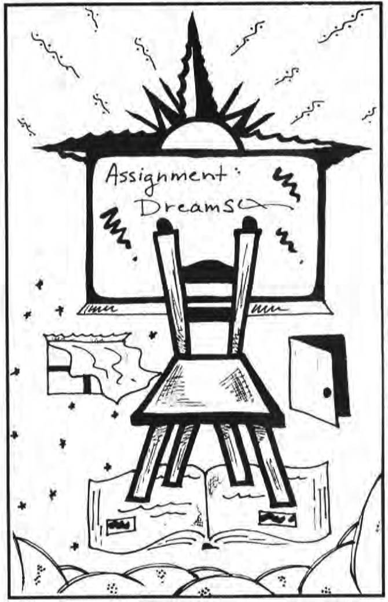

In my work as an accounting professor I am catching fascinating glimpses of an ever-present Counselor who has finally caught my attention by speaking to me in my dreams.
Imagine my delight at discovering that my "theater of the night" also acts as a "light by day" as I teach university students. I have included two dreams in which I used that "light."

ENVIRONMENT of the DREAMS & the DREAMER:
My students tell me I require more work than most professors, but the most often repeated comment on student evaluations, is that I care about my students; I act as sort of "mom" role for them. Yet another role I assume is "coach". I use "coaching" language and techniques. Not surprisingly, one of the dreams included in this article reflects the coach role as well as the role of a mom. Quieting to me, though, is the clear message in both dreams, to me, to ease off - to stand back.
SETTING OF THE FIRST DREAM:
I assigned an ethics case for my principles of accounting classes. The case involved a graduating senior who had job interviews at two separate companies in the same city. Upon discovering he would be reimbursed for interviewing expenses, the student billed both companies for the full amount of his expenses.
In our brief class discussion, a couple students openly said they would have done the same thing; that is, take double reimbursement. However, later when I read the students' written responses to the ethics question, I was surprised to find the same comment made by several other students. I gave considerable thought of what to say to the classes for our next meeting. I finally had my talk prepared on how it is very important to be honest in coming to know oneself and so I appreciated the honesty in the responses. I planned then to lead into a discussion of the matter of treating others as one would like to be treated. I thought my plan was set. Then the following dream came in the early morning the day I planned to give my "little talk".
Don't Ask Your Students to Wash Their Dirty Laundry in Public > People are washing clothes in a laundry area of our apartment building. They brought the clothes up from the basement. I bring my clothes to wash also. A woman who was washing in the basement is now washing upstairs in this laundromat sort of area. A young man, probably a college student, is standing close to her and when he sees me, he says very loudly and possessively to me, "I'm next". I take my basket of clothes downstairs and talk very loud in mimic of the young man's "I'm next" as I go down the stairs. But when I get to the basement, I understand why these people aren't washing in the basement - either there aren't machines here now, or they aren't working. The upstairs is more like a laundromat, than the basement.
[Oh, the 'washing your dirty clothes in public' dream is saying not to say anything about the students' ethics case answers in class. Several students said they would take the "double" reimbursement for interviewing trip.] (The bold type indicates the "aha" point which came just as I finished typing the dream.)
My interpretation of the dream: The dream is saying my planned talk on the ethics case in class is like asking my students to "wash their dirty laundry in public." (Laundromat - a public place.) The matter is a personal matter and best handled at the subconscious level (the basement). Discussing the matter further in class is like asking my students to reveal in public what each can only decide for themselves. (Clothes are often symbolic of the personality.)

Assigning the ethics case provided an opportunity for each student to cleanse personality attitudes and emotions in the privacy of their subconscious level. However, my "appraisal" of the students responses would cause the students to bring their "cleansing work" to the mental level in defense of their attitudes and render the "washing machines in the basement" (use of subconscious mind) inoperable for improving understanding and cleansing attitudes.
On the other hand, the dream seems to confirm what I had already said in class the day the case was assigned: We must live in consideration for others. Likely, the setting of the dream, in an apartment complex (several people involved), confirms the need for consideration of others. Likewise, the young man student who loudly and possess-ively tells me "I'm next" confirms his lack of consideration for others while watching out intensely for his own interests.
Notice, too, my own mimic of the student's "I'm next," which seems to point out by exaggeration that for me to repeat the students' comments about accepting the double reimbursement is certainly an unprofessional and unproductive method of dealing with the situation. Apparently my "dream counselor" is saying my "wellplanned" little talk would be a taunting insult to my students.
I believe the dream is further saying my planned talk wasn't from the my inner resources. (When I arrive in the basement - subconscious level - the washing machines are either not there or are inoperable.) Even though I gave the matter considerable thought I still didn't feel completely satisfied with what I planned to say. And, finally, notice I was also planning to wash my dirty clothes.
How I used my dream: When I went to class the day of the dream, I gave each student their copy of the textbook authors' comments on the ethics case and made a note to myself to assign the ethics cases from most of the chapters we will cover. But I did NOT give my planned "little talk."
SETTING of the SECOND DREAM:
I use a team approach in teaching an advanced auditing class where the class size ranges between twelve to fifteen students. We sit around oblong tables pulled together and act as an auditing team with me, the professor, as the partner-in-charge. This spring I purposely used only one table in order to bring the students in close eye-to-eye contact.
One of the hardest working students in the class was also the star of the university men's basketball team. The dream came in early morning the day there was major auditing case work due as well as an important basketball game that night.
About "gymnastics:" My husband often uses the word "gymnastics" in referring to frustration from excessive paperwork.
THE GYMNASTICS AUDIT TEAM & the COACH-MOM
I am an observer. There is a coach and young athletes - perhaps nine or ten. The coach is at the head of two parallel bars on which the young athletes are doing training. It seems like they are turning over the bars. The bars are two rows close together and the athletes are boys and girls. They are probably the same age, but the girls look more mature. At first I only notice the boys and one in particular. He is tired and thinks the coach is expecting too much. The boy says he has some injury and crawls between the bars toward the lady coach. She doesn't stop the practice, but keeps on going. The boy now does half-hearted turning over the bars. Now it is the end of the day's session and the boy quits the team! And now others quit the team and there are only six girls left; they don't complain. They seem to be willing to work. The coach is discouraged though. I believe she is wondering if there will be enough participants on the team for the next competition (but the dream is unclear on that point).
*Now I seem like the coach and am standing just inside the door at the house of the boy who quit first. It is dusk-like in this modest room. The boy's mother is in the room. She is very discouraged about the boy quitting. She is very disappointed. She had high hopes of how well things were going. She knew he had something to overcome -fight back from something- but had thought her son was making progress.*
My interpretation of the dream: The parallel bars, so close together, is the setting for the auditing class. The arrangement of the young women and young men was basically the same as in the classroom with the young wo men on one side and the young men on the other side with the coach at the front end.
For the young athlete-scholar, the intense practice was his style except when the "gymnastics" (unnecessary "paper work") required of him as a student, coupled with the demands placed on him as an superior athlete, took more strength than he physically possessed. In the dream his "injury" portrays this. His crawling toward the coach shows his desperate need for relief.
The young man's mother (the mom in the professor) is concerned about him in a more compassionate and understanding way than the coach who has a greater interest in the team's being able to do well against competition than in the physical, emotional or mental well being of the gymnast-students.
How I used the dream: I immediately cut back on the work assignments for the auditing class.